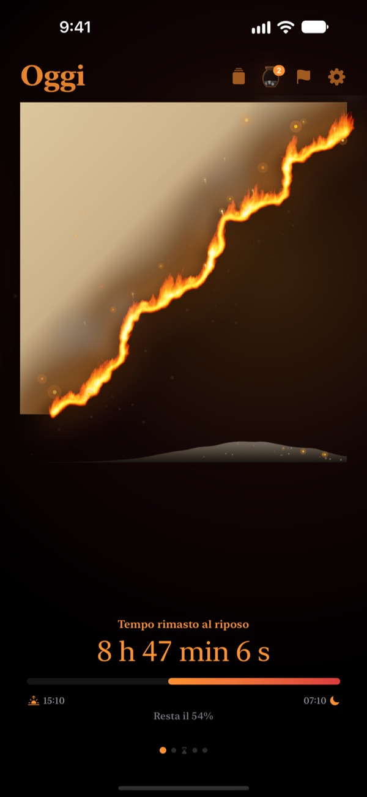
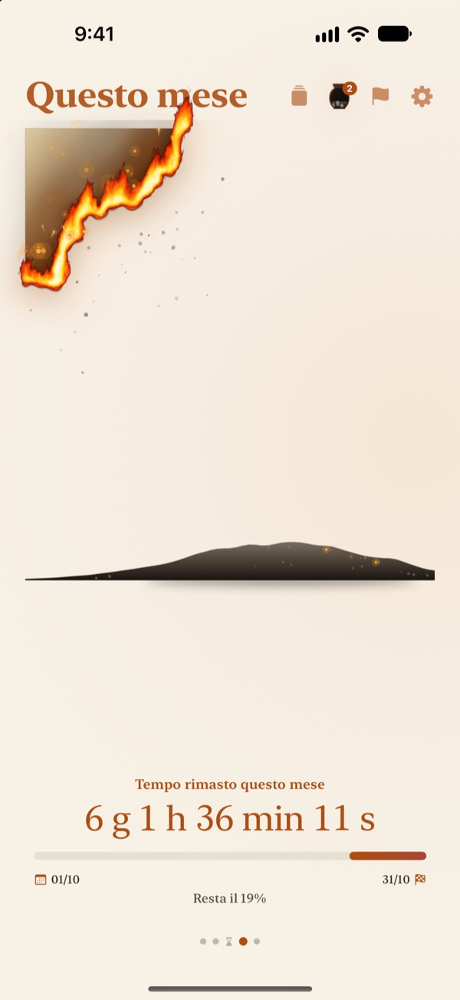
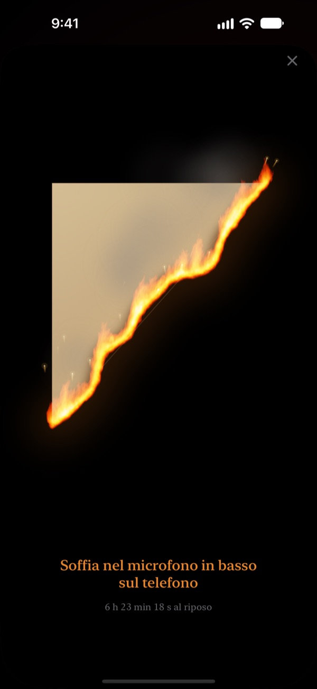
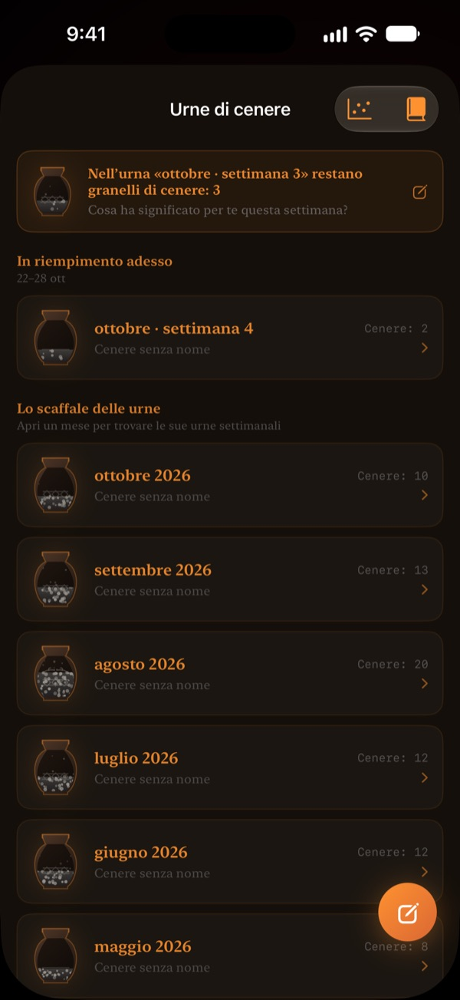

Quello che resta di oggi
brucia davanti a te
Una serata che in numeri sembra innocua appare diversa come pergamena in fiamme. Mezz'ora prima di dormire soffi sullo schermo, spegni il fuoco e chiudi la giornata.
La pergamena in fiamme, il rito del soffio e le riflessioni sono gratis.

Prova a spegnerla
Porta l'orario a poco prima di dormire, poi tieni premuto il pulsante o soffia nel microfono.
Ti è mai capitato di dire "è già mezzanotte?"
Ceni, ti siedi un attimo e la giornata è finita. I numeri dell'orologio sembrano sempre uguali, così non senti il tempo che si accorcia. Pergamena in fiamme mostra quello che resta come una pergamena che brucia, così te ne accorgi prima che la serata sparisca.
Giorno, settimana e anno che bruciano
Dal risveglio all'ora di dormire la pergamena brucia piano. Allo stesso modo vedi quanto resta di questa settimana, di questo mese e di quest'anno.
Aggiungi un obiettivo con data come scadenza e il conto alla rovescia scorre insieme.

Spegni la giornata con un soffio
Da 30 minuti prima di dormire, soffi sulla pergamena e spegni il fuoco. Si usa solo la forza del respiro, non si registra nulla.
Il frammento che resta viene conservato. Giralo e scrivi sul retro una riga sulla tua giornata.

Il tempo passato resta come cenere
Ripensa alla giornata con una riflessione di una riga e mettila come un punto su un grafico a due assi, in base a come hai usato quel tempo. Le riflessioni si accumulano in urne di cenere settimanali e mensili e puoi rileggerle nel Libro delle riflessioni.
Il Flusso della cenere mostra dove è finito il tuo tempo con un grafico di distribuzione e un calendario di braci.

Si parte in tre passi
- 1
Imposta sveglia e ora di dormire
Tocca l'ingranaggio in alto a destra. La pergamena si accende e si spegne secondo questi orari.
- 2
Scegli il periodo
Scorri tra giorno, settimana, mese e anno, oppure nascondi nelle Impostazioni le pagine che non ti servono.
- 3
Aggiungi un widget
Nella schermata Home o di blocco vedi il tempo rimasto senza aprire l'app.
Dove vedere il tempo che resta
- Giorno
- Dal risveglio all'ora di dormire
- Settimana · Mese · Anno
- Quanto resta di questa settimana, di questo mese e di quest'anno
- Tempo libero
- La pergamena della settimana brucia solo nelle ore che tieni per te (Pro)
- Scadenze
- Il tempo che manca alla data di un obiettivo. Una è gratis
- Widget della schermata Home
- Pergamena del giorno in piccolo, medio e grande. Settimana, mese, anno e scadenze in piccolo e medio
- Widget della schermata di blocco
- Circolare, rettangolare e in linea
- Dynamic Island · Attività in tempo reale
- Da un'ora prima di dormire o tutto il giorno. Si sceglie o si disattiva nelle Impostazioni
Espandi la Dynamic Island per vedere la pergamena in fiamme con il conto alla rovescia completo.
La pergamena è gratis. Pro ne conserva di più.
Gratis
- Pergamene di giorno, settimana, mese e anno
- Soffiare sulla fiamma e raccogliere i frammenti
- Riflessioni di una riga, urne di cenere e Libro delle riflessioni
- Controllo del mattino, con i dati del sonno di Salute se vuoi
- Widget Home e schermata di blocco, Dynamic Island
- Una scadenza
Pergamena in fiamme Pro
- Bruciare solo il tuo tempo libero
- Temi: Hanji al chiaro di luna, Celadon, Tramonto
- Fiamme: Fuoco di prateria, Braci, Stellina
- Condividere i frammenti come card e poster
- Esportare il Libro delle riflessioni in PDF
- Dodici mesi di Flusso della cenere
- Scadenze illimitate
Non è un abbonamento. Paghi una volta e resta tuo per sempre, incluse tutte le funzioni Pro future.
Nuovo dispositivo? Tocca Ripristina acquisti nelle Impostazioni.
Domande frequenti
Il widget mostra un orario diverso dall'app.
iOS non ridisegna i widget della schermata Home ogni secondo. Aprendo l'app si risincronizzano. Per un conto alla rovescia al secondo, usa la Dynamic Island e l'Attività in tempo reale nella schermata di blocco.
Soffio ma il fuoco non si spegne.
Si può spegnere solo da 30 minuti prima di dormire. Controlla di aver consentito l'accesso al microfono e soffia in modo costante per circa un secondo vicino al microfono in basso sull'iPhone. Un suono breve non basta.
La mia voce viene registrata?
No. Viene misurata solo la forza del soffio. Nessun suono viene registrato o salvato.
Cosa mostra mentre dormo?
Dopo l'ora di dormire appare un cuore in fiamme che mostra a che punto è la notte fino alla sveglia. Al mattino l'app ti chiede se sei andato a letto in orario e, se hai fatto tardi, la pergamena di oggi parte bruciacchiata di conseguenza. Collegando l'app Salute, usa l'orario in cui ti sei addormentato senza chiedertelo.
Quando arrivano le notifiche?
Un'ora prima di dormire. Se non arrivano, controlla Impostazioni > Notifiche > Pergamena in fiamme.
Consuma molta batteria?
Il conto alla rovescia nell'app scorre ogni secondo, ma i widget si aggiornano con il sistema a basso consumo gestito da iOS. L'impatto è minimo.
Dove vengono salvati i miei dati?
Orari, scadenze, riflessioni e urne restano sul tuo dispositivo. Lo sviluppatore riceve solo statistiche d'uso anonime, diagnosi degli arresti anomali e i feedback che scegli di inviare. Niente pubblicità, niente tracciamento.
Pro è un abbonamento?
No. Paghi una volta e resta tuo per sempre. Su un nuovo dispositivo, tocca Ripristina acquisti nelle Impostazioni.
Bug, idee o altre domande? Scrivi a leeo@kakao.com.